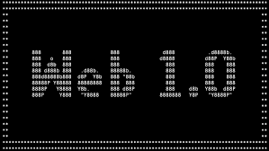

WEB 1.0 (1989-2000)
Inicio de la Web 1.0 (1989)
1990 - HTML
A principios de 1990, Tim Berners-Lee define por fin el HTML, crea el primer navegador web.
Hablar de la historia de HTML sin mencionar el nombre Tim Berners Lee es imposible. A principios de la década de los 90, el físico Tim Berners Lee, investigador de la Organización Europea para la Investigación Nuclear (CERN), realizó una publicación titulada «HTML Tags», conocida como el origen de HTML. Además, unos años después, fundó la W3C, que es uno de los principales agentes en la historia de HTML, como verás más adelante.
Es de sólo lectura. El usuario no puede interactuar con el contenido de la página (nada de comentarios, respuestas, citas, etc.)
1991 - Hipervinculos - Protoclo HTTP
Consiste en una boche de documentos navegadores visuales como IE, web conectada por medio de hipervínculos.
Hipervínculos: Tim Berners-Lee ideó el concepto de hipervínculos, que permiten la conexión entre diferentes documentos en la web. Estos enlaces permiten a los usuarios navegar de una página a otra simplemente haciendo clic en un enlace relevante.
Protocolo HTTP (Hypertext Transfer Protocol): Berners-Lee también desarrolló el protocolo HTTP, que es la base para la comunicación en la World Wide Web. Este protocolo permite la transferencia de información entre un cliente (como un navegador web) y un servidor.
1993 - World Wide Web
Creación del Consorcio World Wide Web (W3C): Tim Berners-Lee fundó el World Wide Web Consortium (W3C) en octubre de 1994, pero ya en 1993 se estaban dando los primeros pasos hacia su creación. El W3C se estableció para estandarizar y promover el desarrollo continuo de la World Wide Web, asegurando la interoperabilidad y la evolución sostenible de las tecnologías web.
Estos acontecimientos en 1993 contribuyeron a la evolución de la web, estableciendo las bases para la explosión posterior de la popularidad de Internet y sentando las bases para la transición a la Web 2.0 en la década siguiente
1995 - Motores de búsqueda como AltaVista
En la segunda mitad de la década de 1990, motores de búsqueda como AltaVista (1995), Excite (1995), y Yahoo (inicialmente lanzado como un directorio en 1994 y luego como motor de búsqueda) se convirtieron en herramientas esenciales. Estos motores de búsqueda permitieron a los usuarios buscar y encontrar información en la creciente cantidad de contenidos en la web.
La capacidad de realizar búsquedas eficaces facilitó la navegación por la web, ya que los usuarios podían encontrar información específica de manera más rápida y eficiente. Este fue un avance clave que contribuyó al acceso y la utilidad de la Web 1.0 al permitir a las personas descubrir contenido de manera más efectiva.